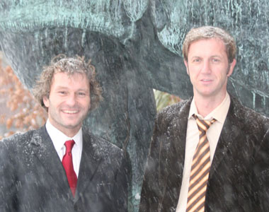

News Archives : 2009 : Visual Space within a Dendrite
by Johann Bollmann and Florian Engert
March 25, 2009
|  (L to R) Florian Engert and Johann Bollmann |
|
More than a century ago, famous neuroanatomist and histologist Ramon y Cajal proposed the idea that a neuron receives information through its extensive dendritic tree and sends it to downstream targets via its axon, a principle referred to as 'dynamic polarization'. Ever since, neuroscientists have been wondering how the shape of a dendritic tree contributes to the processing of incoming information before it is sent to postsynaptic target neurons. In recent years, we have learned much about how signals that arrive almost synchronously at various locations in the dendritic tree are processed and summed to compute neuronal output. Likewise, numerous cellular mechanisms have been identified that control the structure and function of individual dendritic branches and their local connectivity in an activity-dependent manner. Little is known, however, about the spatial distribution of dendritic activity when the neuron is activated in the nervous system in its natural context, for example during sensory stimulation.
Stimuli located near each other in stimulus space are often mapped onto patches of brain tissue that are anatomically close to each other within a given processing stage of the sensory pathway. These 'topographic maps' are a prominent organizing principle of various brain areas, which determines how specific regions of the sensory world are represented in the brain -- for instance, different locations in the visual field or different areas on the surface of the skin. The topography of nerve projections emerges in the developing brain when the growing axons from one stage in a pathway segregate out in the receiving brain area and innervate different, but adjacent territories to form a topographically organized afferent network.
Data from several sensory systems have shown that the receiving population of postsynaptic neurons often inherits this topography -- in the visual cortex, for example, or in the 'roof' of the midbrain, the optic tectum. It remained unclear, however, whether this input topography was also preserved at the sub-cellular scale of a single neuron that sends its dendritic tree into the fanned-out afferent input map. This would be an important factor because a topographic distribution of dendritic activity would probably impact how dendritic signals control the growth of dendritic branches and stabilize newly formed contacts, as well as determine how information is stored in the labyrinthine network of axons and dendrites.
Our study made use of the relative simplicity and clear structure of the Xenopus tadpole brain to investigate this question. The projection from the eye to the midbrain forms a retinotopic map, in which retinal axons project to different tectal areas depending on their retinal origin. To investigate the distribution of dendritic activity at the sub-cellular scale, we used functional in-vivo 2-photon imaging combined with a novel fiber-optic-based visual stimulation method. We found that even at early stages of the developing visual system, dendritic activity reflects the input topography along the vertical axis of the visual field. Furthermore, the level of spiking activity in a single neuron is encoded in the global increases of calcium concentration throughout the dendritic tree. However, sensory stimulation adds a topographic component to the pattern of dendritic activity that depends on the NMDA-type glutamate receptor, which plays a critical role in mechanisms that regulate the structure and function of synaptic contacts during experience-dependent plasticity. It remains to be investigated how topographically-organized dendritic calcium signals may contribute to transient or long-lasting changes in the structure of developing networks.
Read more in Neuron